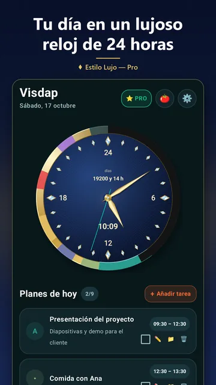
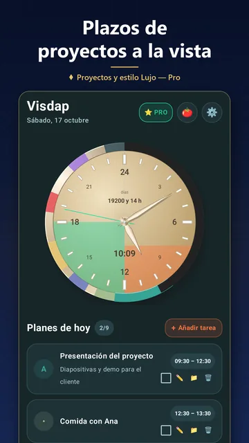
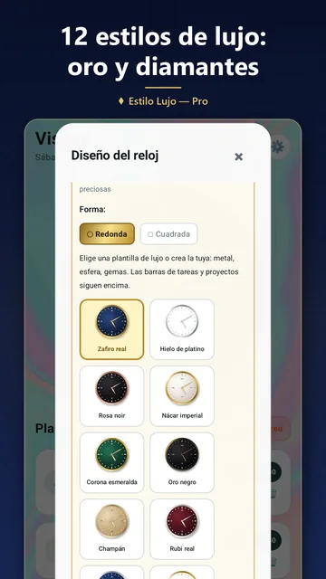
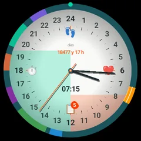

Para periodistas y blogueros
Kit de prensa de Visdap
Todo lo que necesitas para escribir sobre Visdap: los datos clave, una descripción para copiar e imágenes reales de la app.

Ficha técnica
- Nombre
- Visdap: Visual Day Planner
- Desarrollador
- Woder, desarrollador independiente
- Plataformas
- Android 8.0 o posterior, relojes Wear OS vinculados a un teléfono Android, Windows 10 (versión 1809 o posterior) y Windows 11
- Precio
- Gratis para empezar. Pro es una suscripción mensual o anual; cada tienda muestra el precio.
- Idiomas
- Inglés, ucraniano, alemán, español y francés.
- Privacidad
- Sin cuenta, sin anuncios, sin analíticas. Los planes se guardan en el dispositivo.
- Sitio web
- https://visdap.github.io/es/
- Contacto de prensa
- oleksandr.miletskyi@gmail.com
En una frase
Visdap es un planificador visual que muestra todo el día como sectores de colores en una esfera de 24 horas: en la app, en widgets de Android, en un reloj Wear OS y en el escritorio de Windows.
Descripción
Visdap convierte el plan del día en un reloj. Cada tarea se vuelve un sector de color en una esfera de 24 horas, así que el sueño, el trabajo, el estudio y el tiempo en familia caben en un solo círculo. La aguja marca el momento actual, y la parte del día que ya pasó se puede oscurecer para ver de un vistazo cuánto tiempo queda.
En Android, la esfera y la lista de tareas viven en widgets de la pantalla de inicio; en Wear OS, las tareas de hoy aparecen en el reloj con una tarjeta y complicaciones; en Windows, la esfera se queda en el escritorio y puede estar encima de otras ventanas. Visdap no necesita cuenta ni muestra anuncios. Es gratis para empezar, y la suscripción Pro añade tareas ilimitadas, proyectos con plazos, tareas recurrentes y Pomodoro.
Funciones principales
Reloj de 24 horas
Todo el día en una sola esfera, sin confusiones de AM/PM. Redonda o cuadrada, con números arábigos o romanos.
Widgets
Un reloj de 24 horas y una lista de tareas en la pantalla de inicio de Android; en Windows la esfera está en tu escritorio.
Recordatorios que se oyen
Recordatorios con sonido y posponer, justo a tiempo.
Planifica tus días
Calendario mensual y anual, prioridades S/A/B/C y listas de comprobación para cada tarea.
Proyectos y plazos
Hasta 20 proyectos. Las franjas de plazo crecen cada día en la esfera, hasta 4 a la vez.
Pomodoro con registro
25 minutos de concentración y luego un descanso. Cada sesión se asigna a un proyecto con una nota breve.
Imágenes
Capturas de la app de Android, como en Google Play. Abre una imagen para guardarla a tamaño completo.
 Icono de la app
Icono de la app
El plan de hoy en la esfera de 24 horas Planificador: semana, mes y año
Planificador: semana, mes y año
Días restantes y proyectos con plazos
Estilos de esfera
Wear OS PC con Windows
PC con Windows


Puedes usar estas imágenes en artículos y reseñas sobre Visdap. Por favor, no modifiques ni redibujes el icono.
Contacto
¿Preguntas o una solicitud de entrevista? Escríbenos por correo electrónico, leemos todos los mensajes: oleksandr.miletskyi@gmail.com